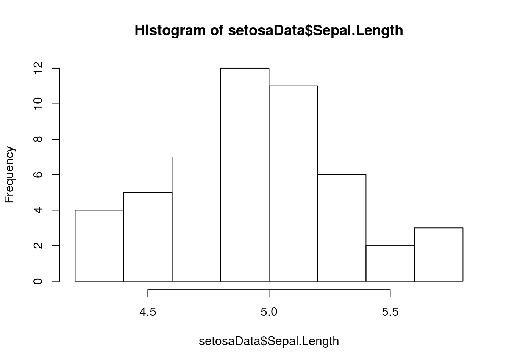
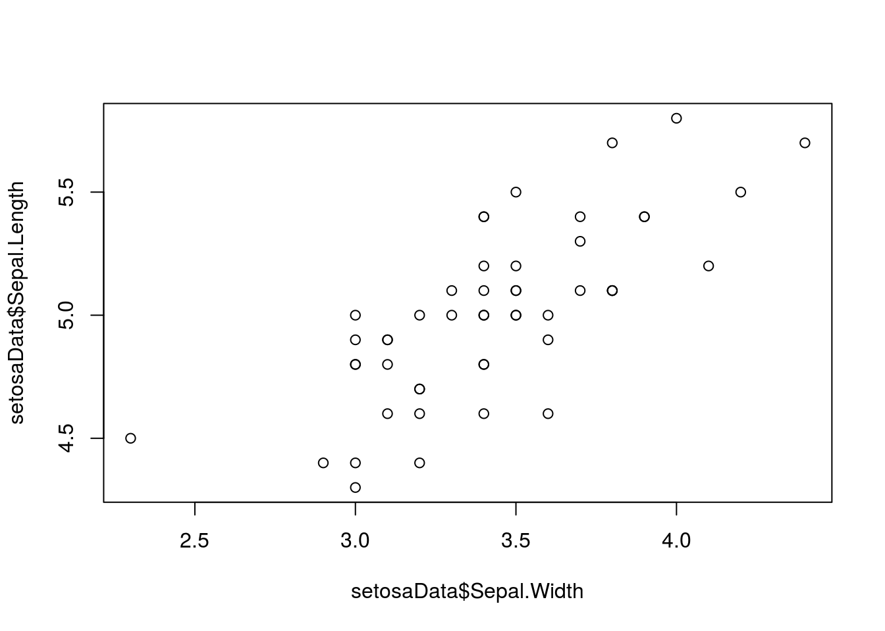

Introduction to programming in R

Introduction
Welcome to programming in R. This module will serve as a tutorial to help you get acquainted with the R programming environment, and get you started with some basic tools and information that will help you along your way.
Like any language, the learning curve for R is steep (like a cliff, not a hill), but once you get the hang of it you can learn a lot really quickly. Cheat sheets like this module (or these reference cards) can help you along the way by serving as miniature reference manuals.
Programming conventions
There are a lot of different ways to write computer code. Each has pros and cons and all of them are intended to increase efficiency and readability. For example, you’ll notice that none of my code goes beyond a certain vertical line in the editor. That is to make it so that people don’t have to scroll over to the right of the editor to see what I have written when I hand off my code. There is no “right” way to edit your code, but it will make your life easier if you find a style you like and stick to those conventions.
Commenting code is helpful.
# This is a comment.
# We know because it is preceded
# by a hashtag, or 'octothorpe'.
# R ignores comments so you have
# a way to write down what you have
# done or what you are doing.
# This is useful for sharing
# code or just figuring out
# what you did.There are a few ways to run a line of code:
Click on a line of code and press ctrl + Enter
Highlight a chunk of code and do the same
Either 1 or 2, but press the ‘Run’ button at the top of the source file to run the code block.
Once you’ve run a code block you can change it and then press the button next to ‘Run’ (or
CTRL+SHIFT+P) to ‘re-run’ the previous block of code.
Try it on your own!
Type the following line of code into a blank source file, and run it.
# Add 1 and 1 together
1 + 1
[1] 2Section breaks help organization
I like to use the built-in heading. It works really well for code-folding in R and when I’ve written a script that is several hundred lines long, some times all I want to see are the section headings. Go ahead and type the code below into a source file. Press the upside-down triangle to the right of the line number to see what it does.
I like to use the built-in headings to separate big chunks of code and keep things organized. It works well for code-folding in R and when I’ve written a script that is several hundred lines long, some times all I want to see are the section headings. Go ahead and paste the code below into a source file. Press the upside-down triangle to the right of the line number to see what it does.
# Section heading ----
# Follow a comment with four dashes
# to insert a section headingStricter R programming rules
All code is in R is case sensitive.
Example (run the following lines):
# We define two objects
# using lowercase and
# uppercase a (A)
a <- 1
A <- 2
# Check to see if they
# are equal
a == A
[1] FALSEA couple of things going on here.
Note that the two objects are not the same, and R knows this.
The
==that we typed is a logical test that checks to see if the two objects are identical. If they were, then it would have returned aTRUEinstead ofFALSE. This operator is very useful, and is common in a number of languages.
You can’t start an object name with a number, but you can end it with one.
# In Rstudio there are nifty
# little markers to show this
# is broken
1a <- 1
# This one works (try it by typing
# 'a1' in the console)
a1 <- 1 R will overwrite objects sequentially, so don’t name two things the same, unless you don’t need the first.
# We assign two different values
# to 'a', one after the other
a <- 1
a <- 2
# 'a' takes on the second value here
a
[1] 2
# Another way to look at the
# value of an object
print(a)
[1] 2
# And, here is one more
show(a)
[1] 2Some things can be expressed in multiple ways. Both T and TRUE can be used to indicate a logical that evaluates as being TRUE.
T
[1] TRUE
TRUE
[1] TRUESome names are reserved or pre-defined. Did you notice that R already knew what T and TRUE were? We will talk more about this later in the course if we need to.
For example:
in, if, else, for, function()
…and a mess of others have special uses.
Some symbols are also reserved for special use, like:
*, % %, &, /, <, (, {, [, '', "", ...
…and a bunch of others. A lot of these are really useful.
Some other handy coding tricks
The HOME button will move you to the start of the line of code, and to the start of the line if you press it twice.
The END button on your keyboard will take you to the end of a line so you can edit code. These will help you move around your code faster.
The TAB button on your keyboard will move the code to the right some number of spaces (user defined). Pressing SHIFT + TAB will move code to the left. These can help you organize your code.
Single click moves the cursor into position. Double click will highlight the word you are clicking, and a triple left click will highlight an entire line.
Use search and replace functionality to copy big chunks of code and change names as needed. Can also use this to just search your code. Press CTRL + F to open the sub menu at the top.
Data structures
Vectors
Despite the wide range of uses you hear about, R is a statistical programming language at its core. It is not a mathematical language or a general programming language, although it has a lot of functionality outside this original scope. R is what is known as a “high-level” or “interpreted” programming language. This means the pieces that make it up are a little more intuitive to the average user than most low-level languages like C or C++. The back-end of R is, in fact, a collection of low-level code that builds up the functionality that we need. This means that R has a broad range of uses, from data management to math, and even GIS and data visualization tools, all of which are conveniently wrapped in an “intuitive”, “user-friendly” language.
Part of this flexibility comes from the fact that R is also a “vectorized” language. Why do you care about that? This will help you wrap your head around how objects are created and stored in R, which will help you understand how to make, access, modify, and combine the data that you will need for any approach to data analysis.
Let’s take a look at how this works and why it matters. Here, we have defined a as a variable with the value of 1…or have we?
a <- 1
a
[1] 1What is the square bracket in the output here? It’s an index. The index is telling us that the first element of a is 1. This means that a is actually a “vector”, not a “scalar” or singular value. You can think of a vector as a column in an excel spreadsheet or an analagous data table. By treating every variable as a vector, or an element thereof, the language becomes much more generalizable.
So, even if we define something with a single value, it is still just a vector with one element. For us, this is important because of the way that it lets us do math. It makes vector operations so easy that we don’t even need to think about them when we start to make statistical models. It makes working through the math a zillion times easier than on paper! In terms of programming, it can make a lot of things easier, too.
The vector is the basic unit of information in R. Pretty much everything else is either made of vectors, or can be contained within one. Wow, what an existential paradox that is. Let’s play with some:
Atomic vectors
A vector that can hold one and only one kind of data:
- Character
- Numeric
- Integer
- Logical
- Factor
- Date/time
And some others, but none with which we’ll concern ourselves.
Below are some examples of atomic vectors. Run the code to see what it does:
Integers and numerics
# Make a vector of integers 1-5
a <- c(1, 2, 3, 4, 5)
# One way to look at our vector
print(a)
[1] 1 2 3 4 5
# Another way to look at it
show(a)
[1] 1 2 3 4 5
# A third way to look at it
a
[1] 1 2 3 4 5
# Look at the structure, integer class
str(a)
num [1:5] 1 2 3 4 5Here is another way to make the same vector, but we need to pay attention to how R sees the data type. A closer look shows that these methods produce a numeric vector (num) instead of an integer vector (int). For the most part, this one won’t make a huge difference, but it can become important when writing statistical models.
# Define the same vector using a sequence
a <- seq(from=1, to=5, by=1) Characters and factors
Characters are anything that is represented as text strings.
# Make a character vector
b <- c('a', 'b', 'c', 'd', 'e')
# Print it to the console
b
[1] "a" "b" "c" "d" "e"
# Now it's a character vector
str(b)
chr [1:5] "a" "b" "c" "d" "e"
# But we can change if we want
b <- as.factor(b)
b
[1] a b c d e
Levels: a b c d e
# Look at the data structure
str(b)
Factor w/ 5 levels "a","b","c","d",..: 1 2 3 4 5Factors are a special kind of data type in R that we may run across from time to time. They have levels that can be ordered numerically. This is not important except that it becomes useful for coding variables used in statistical models- R does most of this behind the scenes and we won’t have to worry about it for the most part. In fact, in a lot of cases we will want to change factors to numerics or characters so they are easier to manipulate.
This is what it looks like when we code a factor as number:
# Print numeric representation
# of factor 'b' created above
as.numeric(b)
# What did that do?
?as.numeric Aside: we can ask R what functions mean by adding a question mark as we do above. And not just functions: we can ask it about pretty much any built-in object. The help pages take a little getting used to, but once you get the hang of it…in the mean time, the internet is your friend and you will find a multitude of online groups and forums with a quick search.
Logical vectors
Most of the logicals we deal with are yes/no or comparisons to determine whether a given piece of information matches a condition. Here, we use a logical check to see if the object a we created earlier is the same as object b. If we store the results of this logical check to a new vector c, we get a new logical vector of TRUE and FALSE.
# The '==' compares the numeric
# vector to the factor vector
c <- a == b
# Print the contents of c
c
[1] FALSE FALSE FALSE FALSE FALSE
# Have a look at the
# data structure
str(c)
logi [1:5] FALSE FALSE FALSE FALSE FALSEWe now have a logical vector. For the sake of demonstration, we could perform any number of logical checks on a vector (it does not need to be a logical like c above).
# We can check for missing values
is.na(a)
[1] FALSE FALSE FALSE FALSE FALSE
# We can make sure that
# all values are finite
is.finite(a)
[1] TRUE TRUE TRUE TRUE TRUE
# The exclamation point means 'not'
!is.na(a)
[1] TRUE TRUE TRUE TRUE TRUE
# We can see if specific
# elements meet a criterion
a == 3
[1] FALSE FALSE TRUE FALSE FALSE
# We can just look at unique values
unique(b)
[1] a b c d e
Levels: a b c d eThe examples above are all fairly simple vector operations. These form the basis for data manipulation and analysis in R.
Vector operations
A lot of data manipulation in R is based on logical checks like the ones shown above. We can take these one step further to actually perform what one might think of as a query.
For example, we can reference specific elements of vectors directly. Here, we specify that we want to print the third element of a.
# This one just prints it
a[3]
[1] 3
# This one stores it in a new object
f <- a[3]Important
If it is not yet obvious, we have to assign the output of functions to new objects for the values to be useable in the future. In the example above, a is never actually changed. This is a common source of confusion early on.
Going further, we could select vector elements based on some condition. On the first line of code, we tell R to show us the indices of the elements in vector b that match the character string c. Outloud, we would say, “b where the value of b is equal to c” in the first example. We can also use built-in R functions to just store the indices for all elements of b where b is equal to the character string ‘c’.
# Print the elements of
# b where they are equal
# to the corresponding
# elements of c
b[b=='c']
[1] c
Levels: a b c d e
# Another way to do the
# same thing
which(b=='c')
[1] 3Perhaps more practically speaking, we can do elementwise operations on vectors easily in R. Give a few of these a shot.
a * .5 # Multiplication
a + 100 # Addition
a - 3 # Subtraction
a / 2 # Division
a ^ 2 # Exponentiation
exp(a) # Same as "e to the a"
log(a) # Natural logarithm
log10(a) # Log base 10If we change b to character, we can do string manipulation, too!
# Convert b to character
b = as.character(b)We can append text. Remember, these ones are just printing the result. We would have to overwrite b or save it to a new object if we wanted to be able to use the result somewhere else later.
# Paste an arbitrary string on to b
paste(b, 'AAAA', sep='')
[1] "aAAAA" "bAAAA" "cAAAA" "dAAAA" "eAAAA"
# We can do it the other way
paste('AAAA', b, sep='')
[1] "AAAAa" "AAAAb" "AAAAc" "AAAAd" "AAAAe"
# Add symbols to separate
paste('AAAA', b, sep='--')
[1] "AAAA--a" "AAAA--b" "AAAA--c" "AAAA--d" "AAAA--e"
# We can replace text
gsub(pattern='c', replacement='AAAA', b)
[1] "a" "b" "AAAA" "d" "e"
# Make a new object
e = paste('AAAA', b, sep='')
# Print to console
e
[1] "AAAAa" "AAAAb" "AAAAc" "AAAAd" "AAAAe"
# We can strip text
# (or dates, or times, etc.)
substr(e, start=5, stop=5)
[1] "a" "b" "c" "d" "e"We can check how many elements are in a vector.
# A has a length of 5,
# try it and check it
length(a)
[1] 5
# Yup, looks about right
a
[1] 1 2 3 4 5And we can do lots of other nifty things like this.
Matrices
Matrices are rectangular objects that we can think of as being made up of vectors.
We can make matrices by binding vectors that already exist
cbind(a, e)
a e
[1,] "1" "AAAAa"
[2,] "2" "AAAAb"
[3,] "3" "AAAAc"
[4,] "4" "AAAAd"
[5,] "5" "AAAAe"Or we can make an empty one to fill.
matrix(0, nrow=3, ncol=4)
[,1] [,2] [,3] [,4]
[1,] 0 0 0 0
[2,] 0 0 0 0
[3,] 0 0 0 0Or we can make one from scratch.
mat = matrix(seq(1, 12), ncol=3, nrow=4)We can do all of the things we did with vectors to matrices, but now we have more than one column, and official ‘rows’ that we can also use to these ends:
ncol(mat) # Number of columns
nrow(mat) # Number of rows
length(mat) # Total number of entries
mat[2, 3] # Value of row 2, column 3
str(mat) See how number of rows and columns is defined in data structure? With rows and columns, we can assign column names and row names.
colnames(mat) <- c('first', 'second', 'third')
rownames(mat) <- c('This', 'is', 'a', 'matrix')
# Take a look
mat
first second third
This 1 5 9
is 2 6 10
a 3 7 11
matrix 4 8 12# We can also do math
# on matrices just like
# vectors, because matrices
# are just vectors smooshed
# into two dimensions
mat*2
first second third
This 2 10 18
is 4 12 20
a 6 14 22
matrix 8 16 24All the same operations we did on vectors above…one example.
More on matrices as we need them. We won’t use these a lot in this module, but R relies heavily on matrices to do linear algebra behind the scenes in the models that we will be working with.
Dataframes
Dataframes are like matrices, only not. They have a row/column structure like matrices. But, they can hold more than one data type!
Dataframes are made up of atomic vectors.
This is probably the data structure that we will use most here, along with atomic vectors.
Let’s make a dataframe to see how it works.
# Make a new object 'a' from a sequence
a = seq(from=.5, to=10, by = .5)
# Vector math: raise each 'a' to power of 2
b = a^2
# Replicates values in object a # of times
c = rep(c('a','b','c','d'), 5)
# Note, we don't use quotes for objects,
# but we do for character variables
d = data.frame(a, b, c) Now we can look at it:
d # Print the dataframe
a b c
1 0.5 0.25 a
2 1.0 1.00 b
3 1.5 2.25 c
4 2.0 4.00 d
5 2.5 6.25 a
6 3.0 9.00 b
7 3.5 12.25 c
8 4.0 16.00 d
9 4.5 20.25 a
10 5.0 25.00 b
11 5.5 30.25 c
12 6.0 36.00 d
13 6.5 42.25 a
14 7.0 49.00 b
15 7.5 56.25 c
16 8.0 64.00 d
17 8.5 72.25 a
18 9.0 81.00 b
19 9.5 90.25 c
20 10.0 100.00 dNotice that R assigns names to dataframes on the fly based on object names. They are not colnames as with matrices, they are names.
We can look at these names.
# All of the names
names(d)
[1] "a" "b" "c"
# One at a time: note indexing, names(d) is a vector!!
names(d)[2]
[1] "b"We can change the names.
# All at once- note quotes
names(d) = c('Increment', 'Squared', 'Class')
# Print it to see what this does
names(d)
[1] "Increment" "Squared" "Class"
# Or, change one at a time..
names(d)[3] = 'Letter'
# Print it again to see what changed
names(d)
[1] "Increment" "Squared" "Letter" We can also rename the entire dataframe.
e = d Have a look:
# head shows first six
# rows by default
head(e)
Increment Squared Letter
1 0.5 0.25 a
2 1.0 1.00 b
3 1.5 2.25 c
4 2.0 4.00 d
5 2.5 6.25 a
6 3.0 9.00 b
# Or, we can look at any
# other number that we want
head(e, 10)
Increment Squared Letter
1 0.5 0.25 a
2 1.0 1.00 b
3 1.5 2.25 c
4 2.0 4.00 d
5 2.5 6.25 a
6 3.0 9.00 b
7 3.5 12.25 c
8 4.0 16.00 d
9 4.5 20.25 a
10 5.0 25.00 bWe can make new columns in data frames like this!
# Make a new column with the
# square root of our increment
# column
e$Sqrt = sqrt(e$Increment)
e
Increment Squared Letter Sqrt
1 0.5 0.25 a 0.7071068
2 1.0 1.00 b 1.0000000
3 1.5 2.25 c 1.2247449
4 2.0 4.00 d 1.4142136
5 2.5 6.25 a 1.5811388
6 3.0 9.00 b 1.7320508
7 3.5 12.25 c 1.8708287
8 4.0 16.00 d 2.0000000
9 4.5 20.25 a 2.1213203
10 5.0 25.00 b 2.2360680
11 5.5 30.25 c 2.3452079
12 6.0 36.00 d 2.4494897
13 6.5 42.25 a 2.5495098
14 7.0 49.00 b 2.6457513
15 7.5 56.25 c 2.7386128
16 8.0 64.00 d 2.8284271
17 8.5 72.25 a 2.9154759
18 9.0 81.00 b 3.0000000
19 9.5 90.25 c 3.0822070
20 10.0 100.00 d 3.1622777Looking at specific elements of a dataframe is similar to a matrix, with some added capabilities. We’ll do this with some real data so it’s more fun. Most of the packages in R have built in data sets that we can use for examples. Let’s start by looking at the Iris data.
# This is how you load built-in
# data sets
data('iris')
# We can use ls() to see
# what is in our environment
ls()
[1] "a" "A" "b" "c" "d" "e" "f" "hook1" "hook2" "iris" "mat"
# Look at the first six rows
# of data in the object
head(iris)
Sepal.Length Sepal.Width Petal.Length Petal.Width Species
1 5.1 3.5 1.4 0.2 setosa
2 4.9 3.0 1.4 0.2 setosa
3 4.7 3.2 1.3 0.2 setosa
4 4.6 3.1 1.5 0.2 setosa
5 5.0 3.6 1.4 0.2 setosa
6 5.4 3.9 1.7 0.4 setosa
# How many rows does it have?
nrow(iris)
[1] 150
# How many columns?
ncol(iris)
[1] 5
# What are the column names?
names(iris)
[1] "Sepal.Length" "Sepal.Width" "Petal.Length" "Petal.Width" "Species"
# Have a look at the data structure-
# tells us all of the above
str(iris)
'data.frame': 150 obs. of 5 variables:
$ Sepal.Length: num 5.1 4.9 4.7 4.6 5 5.4 4.6 5 4.4 4.9 ...
$ Sepal.Width : num 3.5 3 3.2 3.1 3.6 3.9 3.4 3.4 2.9 3.1 ...
$ Petal.Length: num 1.4 1.4 1.3 1.5 1.4 1.7 1.4 1.5 1.4 1.5 ...
$ Petal.Width : num 0.2 0.2 0.2 0.2 0.2 0.4 0.3 0.2 0.2 0.1 ...
$ Species : Factor w/ 3 levels "setosa","versicolor",..: 1 1 1 1 1 1 1 1 1 1 ...
# Summarize the variables in the dataframe
summary(iris)
Sepal.Length Sepal.Width Petal.Length Petal.Width Species
Min. :4.300 Min. :2.000 Min. :1.000 Min. :0.100 setosa :50
1st Qu.:5.100 1st Qu.:2.800 1st Qu.:1.600 1st Qu.:0.300 versicolor:50
Median :5.800 Median :3.000 Median :4.350 Median :1.300 virginica :50
Mean :5.843 Mean :3.057 Mean :3.758 Mean :1.199
3rd Qu.:6.400 3rd Qu.:3.300 3rd Qu.:5.100 3rd Qu.:1.800
Max. :7.900 Max. :4.400 Max. :6.900 Max. :2.500 Now let’s look at some specific things
# What is the value in 12th row
# of the 4th column of iris?
iris[12, 4]
[1] 0.2
# What is the mean sepal length
# among all species in iris?
mean(iris$Sepal.Length)
[1] 5.843333What about the mean sepal length just for setosa? A couple of new things going on here:
We can refer to the columns as atomic vectors within the dataframe if we want to. Some times we have to do this…
Note the logical check for species
# What we are saying here is:
# "Show me the mean of the column
# Sepal.Length in the dataframe iris
# where the species name is setosa"
mean(iris$Sepal.Length[iris$Species=='setosa'])
[1] 5.006We can write this out longhand to make sure it’s correct (it is).
logicalCheck = iris$Species == 'setosa'
lengthCheck = iris$Sepal.Length[iris$Species=='setosa']We can also look at the whole dataframe just for setosa.
# Note that the structure of species
# is preserved as a factor with three
# levels even though setosa is the
# only species name in the new df
setosaData = iris[iris$Species=='setosa' , ]
str(setosaData)
'data.frame': 50 obs. of 5 variables:
$ Sepal.Length: num 5.1 4.9 4.7 4.6 5 5.4 4.6 5 4.4 4.9 ...
$ Sepal.Width : num 3.5 3 3.2 3.1 3.6 3.9 3.4 3.4 2.9 3.1 ...
$ Petal.Length: num 1.4 1.4 1.3 1.5 1.4 1.7 1.4 1.5 1.4 1.5 ...
$ Petal.Width : num 0.2 0.2 0.2 0.2 0.2 0.4 0.3 0.2 0.2 0.1 ...
$ Species : Factor w/ 3 levels "setosa","versicolor",..: 1 1 1 1 1 1 1 1 1 1 ...Finally, once we are working with dataframes, plotting becomes much easier to understand, and we can ease into some rudimentary, clunky R plots.
# Some quick plotting code
# Once we have a nice dataframe like
# these ones, we can actually step into
# The world of exploratory analyses.
# Make a histogram of sepal lengths
hist(setosaData$Sepal.Length)
# Bi-plot
plot(setosaData$Sepal.Width, setosaData$Sepal.Length) 
# Boxplots
boxplot(Sepal.Width~Species, data=iris)
Much, MUCH more of this to come.
Lists
Lists are the ultimate data type in R. They are actually a vector that can hold different classes of data. Each element of a list can be any kind of object (an atomic vector, a matrix, a dataframe, or even another list!!).
The real, filthy R programming relies heavily on lists. We will have to work with them at some point in this class, but we won’t take a ton of time on them here.
Let’s make a list- just to see how they work
# Create an empty list with four elements
myList = vector(mode='list', length=4)
# Assign some of our previously
# created objects to the elements
myList[[1]] = a
myList[[2]] = c
myList[[3]] = mat
myList[[4]] = d
# Print it
# Cool, huh?
myList
[[1]]
[1] 0.5 1.0 1.5 2.0 2.5 3.0 3.5 4.0 4.5 5.0 5.5 6.0 6.5 7.0 7.5 8.0 8.5 9.0 9.5 10.0
[[2]]
[1] "a" "b" "c" "d" "a" "b" "c" "d" "a" "b" "c" "d" "a" "b" "c" "d" "a" "b" "c" "d"
[[3]]
first second third
This 1 5 9
is 2 6 10
a 3 7 11
matrix 4 8 12
[[4]]
Increment Squared Letter
1 0.5 0.25 a
2 1.0 1.00 b
3 1.5 2.25 c
4 2.0 4.00 d
5 2.5 6.25 a
6 3.0 9.00 b
7 3.5 12.25 c
8 4.0 16.00 d
9 4.5 20.25 a
10 5.0 25.00 b
11 5.5 30.25 c
12 6.0 36.00 d
13 6.5 42.25 a
14 7.0 49.00 b
15 7.5 56.25 c
16 8.0 64.00 d
17 8.5 72.25 a
18 9.0 81.00 b
19 9.5 90.25 c
20 10.0 100.00 d
# No names by default
names(myList)
NULL
# Give it names like we did with
# a dataframe
names(myList) = c('a', 'c', 'mat', 'd')
# See how the names work now?
myList
$a
[1] 0.5 1.0 1.5 2.0 2.5 3.0 3.5 4.0 4.5 5.0 5.5 6.0 6.5 7.0 7.5 8.0 8.5 9.0 9.5 10.0
$c
[1] "a" "b" "c" "d" "a" "b" "c" "d" "a" "b" "c" "d" "a" "b" "c" "d" "a" "b" "c" "d"
$mat
first second third
This 1 5 9
is 2 6 10
a 3 7 11
matrix 4 8 12
$d
Increment Squared Letter
1 0.5 0.25 a
2 1.0 1.00 b
3 1.5 2.25 c
4 2.0 4.00 d
5 2.5 6.25 a
6 3.0 9.00 b
7 3.5 12.25 c
8 4.0 16.00 d
9 4.5 20.25 a
10 5.0 25.00 b
11 5.5 30.25 c
12 6.0 36.00 d
13 6.5 42.25 a
14 7.0 49.00 b
15 7.5 56.25 c
16 8.0 64.00 d
17 8.5 72.25 a
18 9.0 81.00 b
19 9.5 90.25 c
20 10.0 100.00 d
# We reference these differently [[]]
myList[[1]]
[1] 0.5 1.0 1.5 2.0 2.5 3.0 3.5 4.0 4.5 5.0 5.5 6.0 6.5 7.0 7.5 8.0 8.5 9.0 9.5 10.0
# But we can still get into each object
# Play around with the numbers to see what they do!
myList[[2]][5]
[1] "a"
# Can also reference it this way!
myList$c[1]
[1] "a"Very commonly, model objects and output are stored as lists. In fact, most objects that require a large amount of diverse information in R pack it all together in one place using lists, that way we always know where to find it. Conceptually, every object in R, from your workspace on down the line, is a list AND an element of a list. It seems like a lot to take in now, but will be very useful in the future.
This work is licensed under a Creative Commons Attribution 4.0 International License.